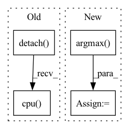

Pattern ID :14250
Before Change
pred = torch.ones_like(scores)
pred[scores <= .5] = 0
y_pred = pred.cpu().numpy().flatten()
auc_scores = scores.detach().cpu() .numpy().flatten()
res = {
"accuracy": accuracy_score(y_true, y_pred),After Change
if y.dim() == 1:
y_true = y.cpu().numpy().flatten()
else:
y_true = torch.argmax( y, dim=-1) .cpu().numpy().flatten()
pred = torch.argmax(scores, dim=-1)
y_pred = pred.cpu().numpy().flatten()In pattern: SUPERPATTERN
Frequency: 3
Non-data size: 4
Instances Fragment ID: 47285851
Project Name: makgyver/gossipy
Commit Name: 31a93a404f8bfba3869c5eb733962a438f4806f0
Time: 2021-08-29
Author: mak1788@gmail.com
File Name: gossipy/model/handler.py
M Class Name: TorchModelHandler
N Class Name: TorchModelHandler
M Method Name: evaluate(2)
N Method Name: evaluate(2)
M Parent Class: ModelHandler
N Parent Class: ModelHandler
M File Name: gossipy/model/handler.py
N File Name: gossipy/model/handler.py
M Start Line: 93
M End Line: 103
N Start Line: 99
N End Line: 123
Before Change
st = time.monotonic()
loss = train_step_jitted(model, optimizer, X, Y, enable_jit=getenv("CLCACHE"))
et = time.monotonic()
loss_cpu = loss.detach().cpu() .data[0]
cl = time.monotonic()
print(f"{i:3d} {(cl-st)*1000.0:7.2f} ms run, {(et-st)*1000.0:7.2f} ms python, {(cl-et)*1000.0:7.2f} ms CL, {loss_cpu:7.2f} loss, {CL.mem_used/1e9:.2f} GB used, {GlobalCounters.global_ops*1e-9/(cl-st):9.2f} GFLOPS")
After Change
if i%10 == 0:
// use training batchnorm (and no_grad would change the kernels)
outs = model(Xt).numpy().argmax(axis=1)
correct = outs == Yt.numpy().argmin(axis=1)
print(f"eval {sum(correct)}/{len(correct)} {sum(correct)/len(correct)*100.0:.2f}%")
GlobalCounters.time_sum = 0
CL.kernel_count = -1 Fragment ID: 47285850
Project Name: geohot/tinygrad
Commit Name: f7291f6ca3fb96e44a91367dea7b2e70c7050309
Time: 2023-02-05
Author: 72895+geohot@users.noreply.github.com
File Name: examples/hlb_cifar10.py
M Class Name: AnonimousClass
N Class Name: AnonimousClass
M Method Name: train_cifar(0)
N Method Name: train_cifar(0)
M Parent Class:
N Parent Class:
M File Name: examples/hlb_cifar10.py
N File Name: examples/hlb_cifar10.py
M Start Line: 107
M End Line: 116
N Start Line: 94
N End Line: 130
Before Change
for data in test_loader:
x = data[0].squeeze(0).squeeze(0).detach().cpu().numpy()
y = data[1].squeeze(0).squeeze(0).detach().cpu().numpy()
x_seg = data[2].squeeze(0).squeeze(0).detach().cpu() .numpy()
y_seg = data[3].squeeze(0).squeeze(0).detach().cpu().numpy()
x = ants.from_numpy(x)
y = ants.from_numpy(y)
After Change
// whichtoinvert=[True, False, True, False]
def_segs.append(def_seg.numpy()[None, ...])
def_segs = np.concatenate(def_segs, axis=0)
def_seg = np.argmax( def_segs, axis=0)
flow = np.array(nib_load(reg12["fwdtransforms"][0]), dtype="float32", order="C")
flow = flow[:,:,:,0,:].transpose(3, 0, 1, 2)
def_seg = torch.from_numpy(def_seg[None, None, ...])
Fragment ID: 47285854
Project Name: junyuchen245/transmorph_transformer_for_medical_image_registration
Commit Name: 0612d1a704653ff98a92a228ecaefd2023577062
Time: 2022-09-07
Author: jchen245@jhmi.edu
File Name: IXI/Baseline_traditional_methods/SyN/infer_IXI.py
M Class Name: AnonimousClass
N Class Name: AnonimousClass
M Method Name: main(0)
N Method Name: main(0)
M Parent Class:
N Parent Class:
M File Name: IXI/Baseline_traditional_methods/SyN/infer_IXI.py
N File Name: IXI/Baseline_traditional_methods/SyN/infer_IXI.py
M Start Line: 57
M End Line: 86
N Start Line: 58
N End Line: 96